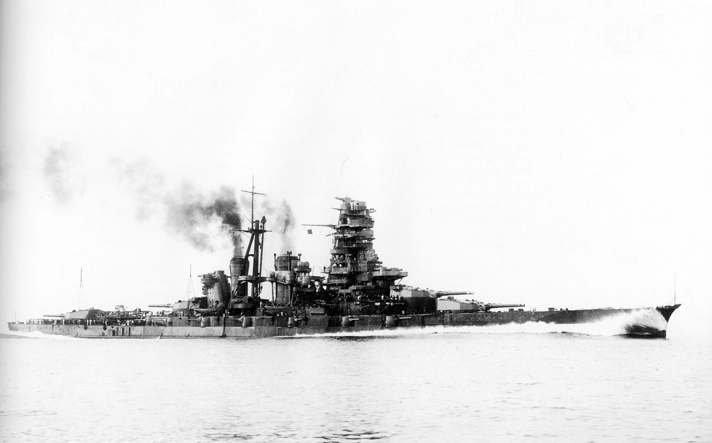
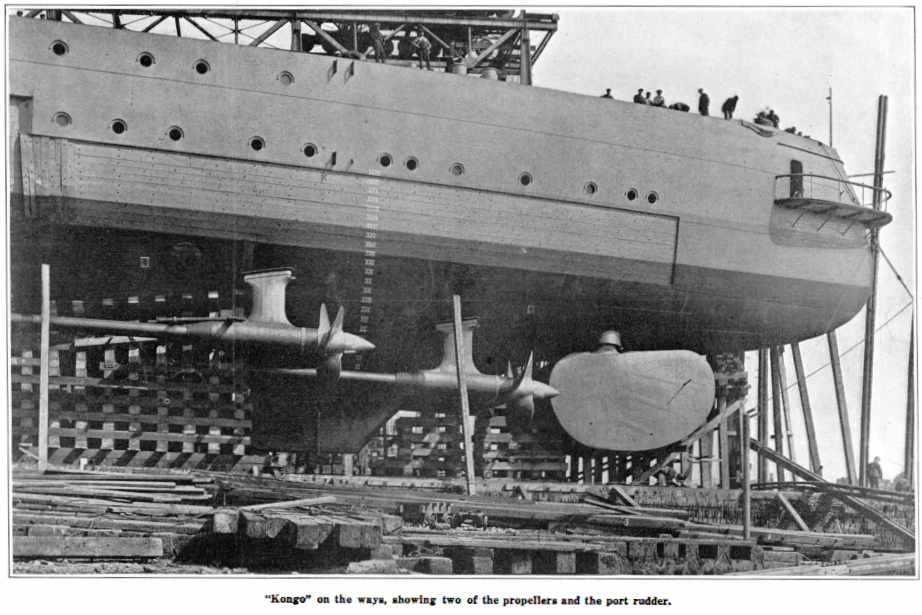
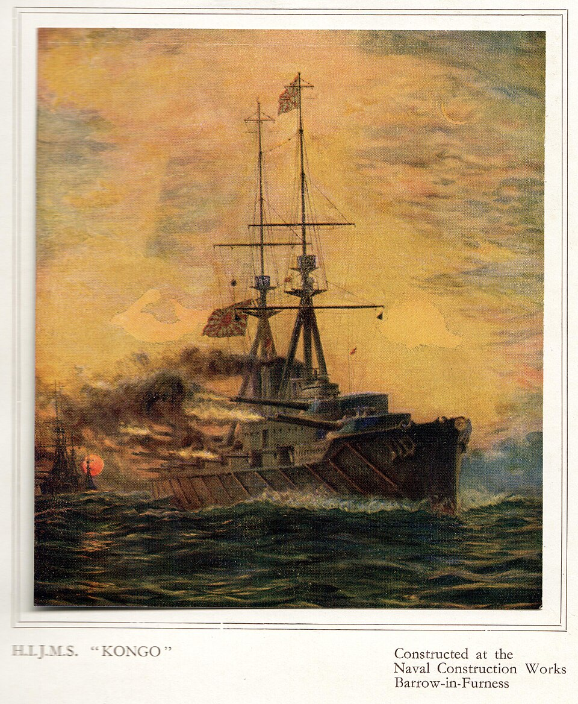
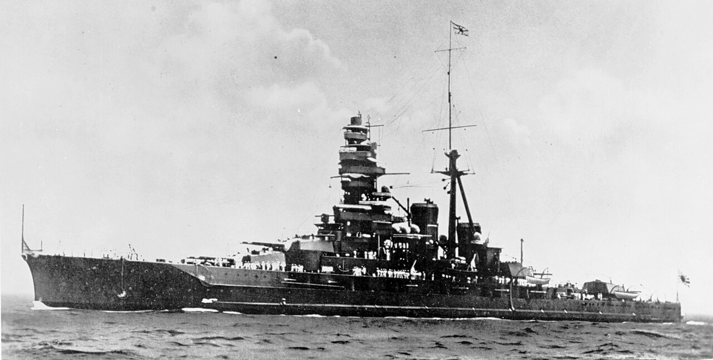
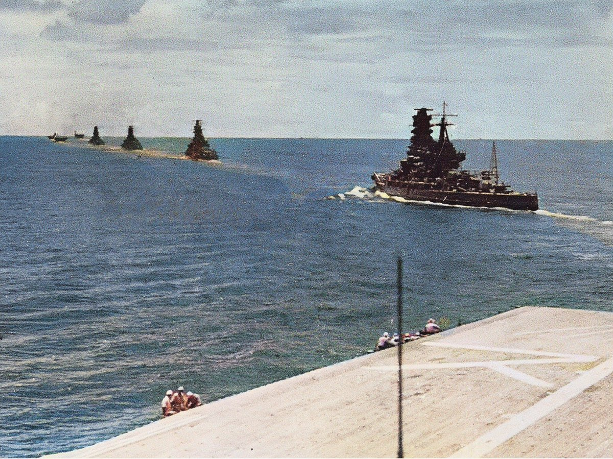
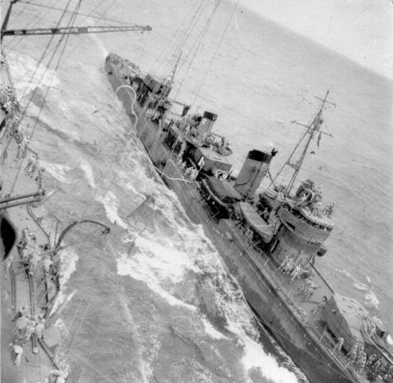
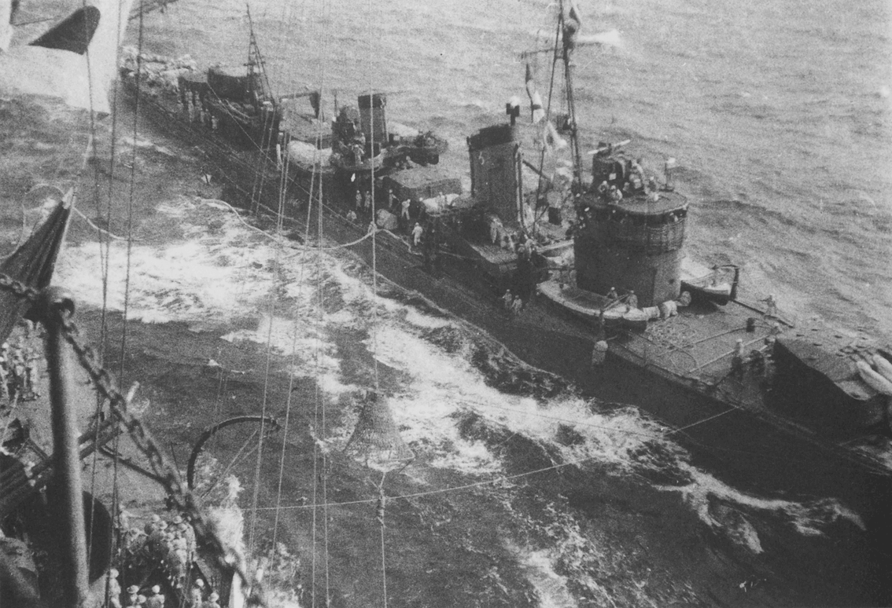
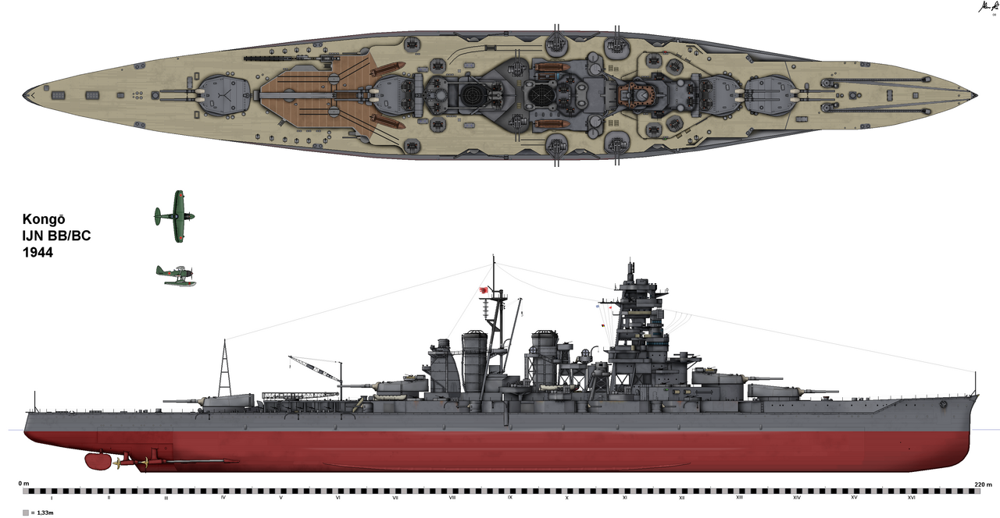
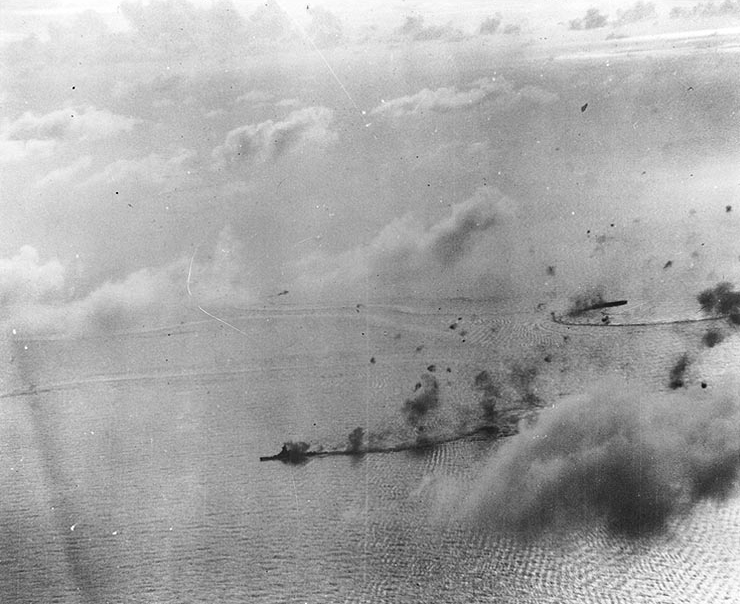
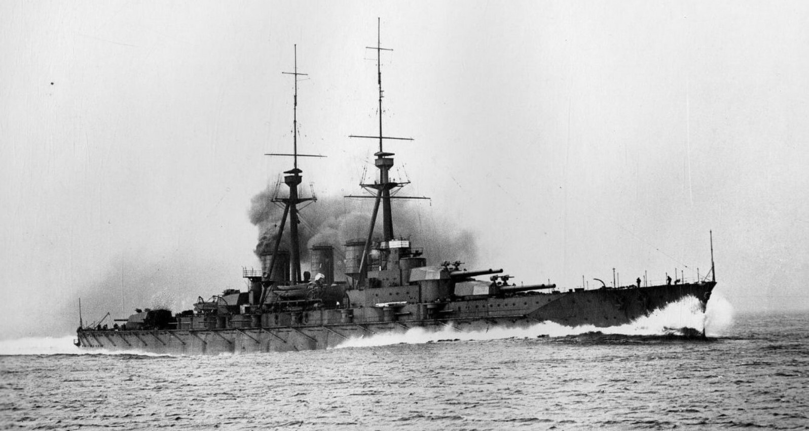

Imperial Japanese Navy
KONGŌ
Battlecruiser

Brief History Summary
Kongō was a warship of the Imperial Japanese Navy during World War I and World War II. She was the first battlecruiser of the Kongō class, among the most heavily armed ships in any navy when built. She was designed by British engineer George Thurston and built starting in 1911 at Barrow-in-Furness in Britain by Vickers Shipbuilding Company. Kongō was the last Japanese capital ship built outside Japan. She entered service in 1913 and patrolled off the Chinese coast during World War I.
Kongō went through two major rebuilds. Starting in 1929, the Imperial Japanese Navy rebuilt her as a battleship, adding stronger armor and improving her speed and power. In 1935, her upper structure was completely rebuilt, her speed was increased again, and she was fitted with catapults for launching floatplanes. Now fast enough to keep up with Japan's growing carrier fleet, Kongō was reclassified as a fast battleship. During the Second Sino-Japanese War, she operated off the coast of mainland China before joining the Third Battleship Division in 1941. In 1942, she sailed with the Southern Force ahead of the Battle of Singapore.
Kongō fought in many major naval battles of the Pacific War during World War II. She supported Japanese Army landings in British Malaya (part of present-day Malaysia) and the Dutch East Indies (now Indonesia) in 1942, then fought American forces at the Battle of Midway and during the Guadalcanal campaign. Through 1943, she was mostly based at Truk Lagoon in the Caroline Islands, Kure Naval Base (near Hiroshima), Sasebo Naval Base (near Nagasaki), and Lingga Roads, and deployed several times against American aircraft carrier raids on Japanese island bases across the Pacific. Kongō took part in the Battle of the Philippine Sea (19–20 June 1944) and the Battle of Leyte Gulf (22–23 October 1944), sinking the destroyer escort USS Samuel B. Roberts and helping to cripple the destroyer USS Heermann in the latter battle. She was torpedoed and sunk by the submarine USS Sealion while crossing the Formosa Strait on 21 November 1944. She was the only Japanese battleship sunk by a submarine in World War II.
Ship Design and Construction
Kongō was the first of the Imperial Japanese Navy's Kongō-class battlecruisers, ships that were almost as large, costly, and well-armed as battleships, but traded off armor protection for higher speed. They were designed by British naval engineer George Thurston and ordered in 1910 under Japan's Emergency Naval Expansion Bill, after Britain commissioned HMS Invincible in 1908. The four Kongō-class battlecruisers were built to match the battlecruisers of other major naval powers at the time, and have been called battlecruiser versions of the British (formerly Turkish) battleship HMS Erin. Their heavy armament of 14-inch guns and their armor, which made up about 23.3% of their roughly 30,000-ton weight in 1913, were far superior to those of any other Japanese capital ship afloat at the time.
Kongō's keel was laid down at Barrow-in-Furness by Vickers Shipbuilding and Engineering on 17 January 1911. Under Japan's contract with Vickers, the first ship of the class was built in the United Kingdom, while the rest were built in Japan. Kongō was launched on 18 May 1912, then moved to the Portsmouth dockyards in England, where fitting-out began in mid-1912. All the parts used to build her were made in the U.K. Kongō was completed on 16 April 1913.

Siemens-Vickers Scandal
In January 1914, a leaked telegram from the Tokyo office of German conglomerate Siemens, reported by Reuters, The New York Times, and The Asahi Shimbun, led Japanese authorities to investigate. The investigation uncovered a pattern of bribery and kickbacks by German and British arms companies. Siemens had been secretly paying senior Japanese officials a 15% kickback, until the British company Vickers outbid them with an offer of 25%. Vickers paid 210,000 yen to Admiral Fuji, who handled procurement for the Imperial Japanese Navy, in 1911 and 1912, and 40,000 yen to Vice Admiral Matsumoto Kazu, tied to winning the contract to build Kongō. Kazu was court-martialed in May 1914, fined 400,000 yen, and sentenced to three years in prison. The Siemens-Vickers scandal over the Kongō contracts brought down the government of Prime Minister Yamamoto Gonnohyōe, who resigned on 23 March 1914. Senior executives at Mitsui, Vickers' Japanese partner, also resigned.
Armament
Kongō's main guns were originally meant to be ten 12-inch (305 mm) weapons. But her builders, Vickers, convinced Japan to switch to a larger gun after Kongō's construction had already begun. As a result, she was built with eight Vickers 14-inch (356 mm) guns in four twin turrets, two forward and two aft, making her the most powerfully armed capital ship in the world when she entered service. The U.S. Office of Naval Intelligence noted that her turrets were similar to British 15-inch turrets, with better flash-tightness. Each main gun could fire high-explosive or armor-piercing shells about 38,770 yards (19.14 nautical miles, or 35.45 km), at a rate of roughly two shells per minute. Following Japan's approach of building more powerful ships before rival navies did, Kongō and her sister ships were the first in the world to carry 14-inch guns. Each gun carried enough ammunition for 90 shots and had a barrel life of about 250 to 280 shots. In 1941, the four Kongō-class ships began using different colored dye on their armor-piercing shells to help with targeting; Kongō's shells used red dye.
Armor
Being a battlecruiser, Kongō had fairly thin armor. Her main belt was 6 to 8 inches (152–203 mm) thick. Deck armor ranged from 1 inch (25 mm) to 1.5 inches (38 mm) to 2.75 inches (7 cm), depending on the area. She had 9-inch (229 mm) barbette armor protecting the ammunition supply for her main guns, plus turret armor with 10-inch (254 mm) faces and 9-inch (229 mm) plating on the sides and rear.
Service History
1913–1929: Service as a Battlecruiser

Kongō was completed and commissioned into the Imperial Japanese Navy on 16 August 1913. Twelve days later, she left Portsmouth for Japan. She docked in Singapore from 20 to 27 October, then reached Yokosuka Naval Arsenal on 5 November, where she was placed in First Reserve. In January 1914, she went to Kure Naval Base for a check of her weapons.
On 3 August 1914, Germany declared war on France and invaded through Belgium, starting World War I in the West. Twelve days later, Japan warned Kaiser Wilhelm II to pull German troops out of their base at Qingdao, China. When Germany didn't respond, Japan declared war on 23 August and took over former German territories in the Caroline Islands, Palau Islands, Marshall Islands, and Mariana Islands. Kongō was quickly sent to the Central Pacific to patrol German shipping routes. She returned to Yokosuka on 12 September, and a month later was assigned to the First Battleship Division.
In October, Kongō and her new sister ship Hiei sailed off the Chinese coast to support Japanese army units during the Siege of Tsingtao. Kongō then returned to Sasebo Naval Base to have her searchlights upgraded. On 3 October 1915, Kongō and Hiei took part in sinking the old ship Imperator Nikolai I as a target for practice. It was a Russian pre-dreadnought captured in 1905 during the Russo-Japanese War and later used as an IJN warship.
After the Royal Navy defeated the German East Asia Squadron at the Battle of the Falkland Islands in December 1914, there was little need for further IJN operations in the Pacific. Kongō spent the rest of World War I based at Sasebo or patrolling off the coast of China. In December 1918, once World War I ended, she was placed in "Second Reserve." In April 1919, she was fitted with a new seawater flooding system for her ammunition magazines.
1929–1935: Service as a Battleship

The Washington Treaty barred Japan from building new capital ships until 1931, so instead it upgraded its World War I-era battleships and battlecruisers. Starting in September 1929, Kongō went through extensive modernization at Yokosuka Naval Arsenal. Over the next two years, the horizontal armor near her ammunition magazines was strengthened, and the machinery spaces inside the hull got better torpedo protection. Anti-torpedo bulges were added along her waterline, which the Washington Treaty allowed. She was refitted to carry three Type 90 Model 0 floatplanes, though no launch catapults were installed yet. To boost her speed and power, all 36 of her old Yarrow boilers were replaced with 16 newer ones, and Brown-Curtis direct-drive turbines were installed. Her forward funnel was removed, and the second funnel was made bigger and taller. These hull changes raised her armor weight from 6,502 to 10,313 long tons, which broke the terms of the Washington Naval Treaty. In March 1931, Kongō was reclassified as a battleship.
On 22 April 1930, Japan signed the London Naval Treaty, adding further limits on naval forces for the countries involved. Several of Japan's older battleships were scrapped without new capital ships built to replace them. After some final fitting-out work, Kongō's reconstruction, which began in September 1929, was declared finished on 31 March 1931. On 1 December 1931, two months after Japan invaded Manchuria, Kongō joined the First Battleship Division and became flagship of the Combined Fleet. More rangefinders and searchlights were added to her superstructure in January 1932, and Captain Nobutake Kondō took command in December. In 1933, launch catapults were installed between her two rear turrets.
On 25 February 1933, after a report from the Lytton Commission, the League of Nations found that Japan's invasion of China had violated Chinese sovereignty. Japan rejected this ruling and withdrew from the League of Nations that same day. It also immediately pulled out of the Washington Naval Treaty and the London Naval Treaty, freeing itself from all limits on the number and size of its capital ships. In November 1934, Kongō was placed in Second Reserve to prepare for more modifications. On 10 January 1935, Nazi Germany's naval attaché to Japan, Captain Paul Wenneker, toured Kongō as part of a gunnery demonstration.
1935–1941: Service as a Fast battleship

n 1 June 1935, Kongō was dry-docked at Yokosuka Naval Arsenal for upgrades meant to let her escort Japan's growing carrier fleet. Her stern was lengthened by 26 feet (7.9 m) to give her a better fineness ratio, and her 16 older boilers were replaced with 11 oil-fired Kampon boilers and newer geared turbines. Her bridge was also completely rebuilt in Japan's pagoda mast style of forward superstructure, and catapults were added to launch three Nakajima E8N or Kawanishi E7K reconnaissance and spotter floatplanes.
Kongō's armor was also heavily upgraded. Her main belt, previously six to eight inches thick in different spots, was strengthened to a uniform eight inches, and diagonal bulkheads 5 to 8 inches (127 to 203 mm) deep were added to reinforce it further. Turret armor was strengthened to 10 inches (254 mm), and 4 inches (102 mm) were added to parts of the deck armor. Protection for her ammunition magazines was also increased to 4 inches (10 cm). This rebuild finished on 8 January 1937. Now capable of over 30 knots (56 km/h) despite her much heavier hull, Kongō was reclassified as a fast battleship. Even so, she still had much in common with a battlecruiser: her 8-inch (203 mm) belt, 9-inch (229 mm) barbettes, and 10-inch (254 mm) turret armor still weren't strong enough to stop even her own 14-inch (356 mm) guns.
In February 1937, Kongō was assigned to the Sasebo Naval District, and in December she was placed under the command of Takeo Kurita in the Third Battleship Division. In April 1938, two float planes from Kongō bombed the Chinese city of Fuzhou during the Second Sino-Japanese War. Throughout 1938 and 1939, Kongō steamed off the Chinese coast in support of Japanese Army operations during the war. In November 1939, Captain Raizo Tanaka assumed command of Kongō. From November 1940 to April 1941, additional armor was added to Kongō's armament barbettes and ammunition tubes, while ventilation and firefighting equipment was also improved. In August 1941, she was assigned to the Third Battleship Division under the command of Vice Admiral Gunichi Mikawa alongside her fully modified sister warships Hiei, Kirishima and the Haruna.
1942: Pacific Theatre Service

Kongō and Haruna left the Hashirajima fleet anchorage on 29 November 1941 to start the Pacific War as part of the Southern (Malay) Force's Main Body, under Vice-Admiral Nobutake Kondō. On 4 December 1941, the Main Body arrived off southern Thailand and northern Malaya to prepare for the invasion of Thailand and the Malayan Peninsula four days later. When Britain's "Force Z," made up of the battleship Prince of Wales and the battlecruiser Repulse, was quickly defeated by Japanese land-based aircraft from southern Vietnam, Kongō's battlegroup pulled back from Malayan waters. This group then sailed from Indochina for three days in mid-December to protect a reinforcement convoy heading to Malaya, and again on 18 December to cover the Japanese Army's landing at Lingayen Gulf in Luzon, Philippines. The Main Body left Cam Ranh Bay in French Indochina on 23 December bound for Taiwan, arriving two days later. In January 1942, Kongō and the heavy cruisers Takao and Atago gave distant cover for air attacks on Ambon Island.
On 21 February, Kongō joined Haruna, four fast aircraft carriers, five heavy cruisers, and many support ships to prepare for "Operation J," Japan's invasion of the Dutch East Indies. On 25 February, the Third Battleship Division covered air attacks on Java. Kongō shelled Christmas Island off western Australia on 7 March 1942, then returned to Staring-baai for 15 days on standby. In April 1942, Kongō joined five fleet carriers in attacks on Colombo and Trincomalee in Ceylon. After the British heavy cruisers HMS Dorsetshire and HMS Cornwall were sunk on 5 April 1942, this task force moved southwest to find the rest of the British Eastern Fleet, then commanded by Admiral James Somerville. On 7 April, the Japanese oil tankers fell some distance behind the main formation, so Kongō refueled several destroyers and photographed Arare and Shiranui being refueled. On 9 April, one of Haruna's reconnaissance seaplanes spotted the carrier HMS Hermes south of Trincomalee. That same day, Japanese air attacks sank the carrier, and Kongō came under attack from nine British medium bombers but wasn't hit. Having crippled the British Eastern Fleet's offensive strength, the Third Battleship Division headed back to Japan. Kongō reached Sasebo on 22 April. From 23 April to 2 May, she was drydocked at Sasebo to have her anti-aircraft weapons reconfigured.
On 27 May 1942, Kongō sailed with Hiei and the heavy cruisers Atago, Chōkai, Myōkō, and Haguro as part of Admiral Nobutake Kondō's invasion force during the Battle of Midway. After the Combined Fleet lost four fast carriers on 4 June 1942, Kondō's force pulled back to Japan. On 14 July, Kongō became flagship of the restructured Third Battleship Division. In August, she was drydocked at Kure to get surface-detection radar and more rangefinders. In September, Kongō sailed with Hiei, Haruna, Kirishima, three carriers, and many smaller warships in response to the U.S. Marine Corps landing on Guadalcanal in the Solomon Islands. On 20 September, this task force was ordered back to Truk Naval Base in the central Pacific.

After the Battle of Cape Esperance, the Japanese Army decided to reinforce its troops on Guadalcanal. To shield their transport convoy from air attack, Admiral Isoroku Yamamoto sent Haruna and Kongō, escorted by one light cruiser and nine destroyers, to shell the American air base at Henderson Field. Because they were fast, the two battleships could bombard the airfield and pull out before land-based planes or American carriers could strike back. On the night of 13-14 October, the two ships shelled the Henderson Field area from about 16,000 yards (15,000 m), firing 973 14-inch high-explosive shells. In the most successful Japanese battleship action of the war, the bombardment badly damaged both runways, destroyed nearly all the Marines' aviation fuel, and destroyed or damaged 48 of their 90 planes, killing 41 Marines. A large Japanese troop and supply convoy reached Guadalcanal the next day.
During the Battle of the Santa Cruz Islands on 26 October 1942, four Grumman TBF Avenger torpedo bombers attacked Kongō but scored no hits. In mid-November, she and other warships gave distant cover for a failed IJN mission to bombard Henderson Field again and land more Army reinforcements on Guadalcanal. On 15 November 1942, after Japan's defeat and the loss of Hiei and Kirishima in the Naval Battle of Guadalcanal, the Third Battleship Division returned to Truk, where it stayed for the rest of 1942.
1943: Movement between bases
Throughout 1943, Kongō didn't engage any enemy targets directly. In late January 1943, she took part in "Operation Ke" as part of a diversionary and distant covering force, supporting IJN destroyers as they evacuated Army troops from Guadalcanal. Between 15 and 20 February 1943, the Third Battleship Division moved from Truk to Kure Naval Base. On 27 February, Kongō was drydocked for anti-aircraft upgrades: two triple 25 mm gun mounts were added, two of her 6-inch turrets were removed, and extra concrete protection was added near her steering gear.
On 17 May 1943 in response to the U.S. Army's invasion of Attu Island, Kongō sailed out with the battleship Musashi, the rest of the Third Battleship Division, two fleet carriers, two cruisers, and nine destroyers. Three days later, the American submarine USS Sawfish spotted the task force but couldn't attack it. On 22 May 1943, the force reached Yokosuka, where three more fleet carriers and two light cruisers joined it. The force was disbanded after Attu fell to the U.S. Army before preparations for a counterattack could be completed.
On 17 October 1943, Kongō left Truk again as part of a larger task force of five battleships, three fleet carriers, eight heavy cruisers, three light cruisers, and many destroyers, responding to U.S. Navy air raids on Wake Island. The two forces never made contact, and the Japanese task force returned to Truk on 26 October 1943. Kongō soon left Truk for home waters, arriving at Sasebo on 16 December 1943 for refits and training in the Inland Sea.
1944: Reconfiguration and Combat

In January 1944, Kongō was drydocked to have her anti-aircraft weapons reconfigured. Four 6-inch guns and a pair of twin 25 mm mounts were removed and replaced with six twin 5-inch guns and four triple 25 mm mounts. The Third Battleship Division left Kure on 8 March 1944, reaching Lingga on 14 March, where it stayed for training until 11 May 1944. On 11 May 1944, Kongō and Admiral Ozawa's Mobile Fleet left Lingga for Tawitawi, where they were joined by Vice-Admiral Takeo Kurita's "Force C." On 13 June, Ozawa's Mobile Fleet left Tawitawi headed for the Mariana Islands. During the Battle of the Philippine Sea, Kongō escorted Japan's fast carriers and came through counterattacks by U.S. carrier aircraft on 20 June without damage. When she got back to Japan, 13 triple and 40 single 25 mm mounts were added to her anti-aircraft weapons, bringing her total to over 100 mounts. In August, two more 6-inch guns were removed and another eighteen single mounts installed.
Battle of Leyte Gulf

On 22 October 1944, Kongō left Lingga to take part in "Operation Sho-1," Japan's counterattack in the Battle of Leyte Gulf, the largest naval battle in history, as part of Admiral Kurita's Center Force, aiming to destroy Allied troop convoys headed for the Philippines. The next day, though, the submarines USS Darter and USS Dace found the force and sank the heavy cruisers Atago and Maya. Darter also crippled the heavy cruiser Takao, forcing her out of the battle and requiring the destroyers Naganami and Asashimo to escort her back. The following day, a large wave of American aircraft attacked. Kongō took light damage from near-miss bombs, but nothing serious enough to affect her combat ability, since most of the attacks focused on Musashi, which sank after nine hours under at least 17 bomb hits and 19 torpedo hits. Admiral Kurita ordered a fake retreat that successfully fooled the Americans, then turned his ships back toward the Leyte Gulf landings two hours later.
Battle off Samar
The next day, as Kongō continued on her course, Kurita spotted enemy ships in the distance. This was Taffy 3, a group of six U.S. escort carriers, three destroyers, and four destroyer escorts supporting the Leyte landings. Kurita mistook them for full-sized fleet carriers. At 6:59, Kongō got permission to fire and unleashed several full broadsides from her main guns at 35,000 yards (32,000 m), opening the Battle off Samar, but the range was too great for any to hit. At 7:13, she took a near-miss bomb hit to her stern, then five minutes later spotted the destroyer USS Johnston and fired three salvos. One of her 14-inch shells landed just inches from Johnston, spraying red dye across the bridge. But at 7:22, aircraft strafing knocked out her main battery rangefinder.
At 7:25, Kongō ran into a rain squall that blinded her guns entirely, taking her out of the fight. She then spotted five torpedoes ahead of her, fired from the destroyer USS Hoel. Contrary to what American accounts often claim, she didn't need to dodge them and simply watched them pass ahead. She didn't leave the squall until 8:02, when she prepared to fire again. At 8:23, from 26,300 yards (24,000 m), she fired her first shots in over an hour, targeting the escort carrier USS Gambier Bay. Two battleship-caliber shells hit, causing heavy damage, though Yamato also claimed these hits, having fired from a matching angle, bearing, and range. At 8:50, Kongō fired on the destroyer USS Heermann from 28,000 yards (26,000 m) and finally damaged an enemy ship outright: two explosions beneath the keel flooded Heermann's bow, helping to cripple her along with gunfire from the heavy cruisers Tone and Chikuma.
Finally, at 9:20, Kongō found the destroyer escort USS Samuel B. Roberts, which was out of torpedoes and nearly out of ammunition after heavy fighting, making her an easy target. Mistaking her for a destroyer, Kongō switched to high-explosive rounds and fired several salvos from her secondary guns, scoring two 6-inch hits, one below the waterline that destroyed Samuel B. Roberts's forward fire room and cut her speed to 17 knots, the other exploding in her aft superstructure. Permission to fire the main guns came next, and a single broadside scored three or four 14-inch hits that knocked out the rest of her engines and all power. The order to abandon ship soon followed, and Samuel B. Roberts sank stern-first just after 10:00.
Overexaggerated Engagements
Many Western accounts of the Battle off Samar have greatly overstated Kongō's performance, some crediting her with sinking or helping sink every ship Taffy 3 lost. Around 7:30, she has been credited with three 14-inch shell hits on the destroyer Johnston at 13,300 yards (12,200 m), cutting her speed to 17 knots and destroying three of her five 5-inch guns, allowing the crippled destroyer to be finished off by the light cruiser Yahagi and the destroyers Yukikaze, Isokaze, Urakaze, and Nowaki. But Kongō was blinded by rain squalls at the time, had lost her main battery rangefinder to aircraft strafing, and was much farther away than American reports suggest. The evidence instead points to the battleship Yamato as the one that crippled and helped sink Johnston.
Kongō has similarly been credited with badly damaging the destroyer Hoel early in the battle, setting her up to be finished off by other ships. But for the same reasons she couldn't have hit Johnston, she also couldn't have hit Hoel, since she couldn't even see the destroyer at 9,000 yards (8,200 m). The evidence instead points to the heavy cruiser Haguro as the source of the crippling damage that doomed Hoel.
Later in the battle, Kongō has been credited with helping sink the escort carrier Gambier Bay, but she was too far away to realistically score hits, and all the battleship-caliber hits on the carrier match Yamato's firing solution instead. Nor did Kongō help finish off the crippled Hoel; that was done by the battleships Yamato and Nagato.
Even so, combined air and surface attacks sank three Japanese heavy cruisers. Between those losses, the previous battles, the growing intensity of the air attacks, and Kurita learning via radio message late in the battle that he'd been fighting escort carriers rather than fleet carriers, he ordered a retreat. During the fighting, Kongō had fired 211 14-inch shells and 272 6-inch shells. The next day, air attacks continued to harass the Japanese ships, and Kongō took two bomb hits on the starboard side of her bow along with five near misses, suffering minor damage. After several days of fighting, Kongō and the rest of Kurita's Center Force finally reached Brunei on the 28th.
Final Fate
On 16 November, after a U.S. air raid on Brunei, Kongō left with Yamato, Nagato, and the rest of the First Fleet, heading for Kure for a major fleet reorganization and repairs. On 20 November, they entered the Formosa Strait. Shortly after midnight on 21 November, the submarine USS Sealion picked up the fleet on radar at 44,000 yards (40,000 m). Moving into position at 02:45, Sealion fired six bow torpedoes at Kongō, then three stern torpedoes at Nagato fifteen minutes later. A minute after the first salvo, two torpedoes were seen to hit Kongō on the port side, while a third sank the destroyer Urakaze with all hands.
The torpedoes flooded two of Kongō's boiler rooms, but she could still make 16 knots (30 km/h). By 05:00, she had slowed to 11 knots (20 km/h) and got permission to break off from the fleet and head for the port of Keelung in Formosa, escorted by the destroyers Hamakaze and Isokaze. Within fifteen minutes of leaving the main force, Kongō was listing 45 degrees and flooding out of control. At 5:18, she lost all power, and the order to abandon ship was given. At 5:24, while the crew was still evacuating, her forward 14-inch magazine exploded, and the broken ship sank quickly, killing over 1,200 of her crew, including the commander of the Third Battleship Division and her captain.
Kongō is believed to have sunk in 350 feet (110 m) of water about 55 nautical miles (102 km) northwest of Keelung. She was one of only three British-built battleships sunk by submarine attack in World War II, along with the British Revenge-class battleship HMS Royal Oak and the Queen Elizabeth-class battleship HMS Barham. Kongō is the only Japanese battleship from World War II whose wreck has not been found or surveyed.

Kongō as seen in 1913
| History | |
|---|---|
| Ship Name | Kongō (after Mount Kongō) |
| Shipyard Builder | Vicker's Shipbuilding Company |
| Laid Down | January 17, 1911 |
| Completed | May 18, 1912 |
| Commissioned | August 16, 1913 |
| Sunken | November 21, 1944 |
| Fate | Sunk by the USS Sealion whilst navigating the Formosa Strait |
| Initial Technical Specifics | |
|---|---|
| Class + Type | Kongō Class Battlecruiser |
| Displacement | 37,187 metric tons (36,600 long tons) |
| Length | 222 m (728 ft 4 in) |
| Beam | 31 m (101 ft 8 in) |
| Draft | 9.7 m (31 ft 10 in) |
| Installed Power | 36 Yarrow Boilers |
| Propulsion | 4 Shafts |
| Speed | 30 knots (56 km/h; 35 mph) |
| Range | 10,000 nmi @ 14 knots (19,000 km @ 26 km/h) |
| Crew Complement | 1,360 Sailors |
| Armament | 1913: 4 x Twin Mount 356 mm (14 in) Guns 8 x Single Mount 15 cm (6 in) Guns 8 x Single Mount 76 mm (3 in) Guns 4 x 6.5 mm Machine Guns 1944: 4 x Twin Mount 356 mm (14 in) Guns 8 x Single Mount 152 mm (6 in) Guns 6 x Twin Mount 127 mm (5 in) DP Guns 15 x Triple Mount 25 mm Type 96 AA Guns 8 x Twin Mount 25 mm Type 96 AA Guns 40 x Single 25mm Type 96 AA Guns |
| Armor | Waterline belt: 203 mm (8 in) Deck: 38-58 mm (1.5-2.3 in) Gun Turrets: 229 mm (9 in) Barbettes: 254 mm (10 in) |
Timeline
- Laid down at Barrow-in-Furness, England.
- Completed and commissioned.
- First modernization, classification changed: Battleship.
- Second modernization, classification changed: Fast Battleship
- Fought in the Battle of Midway.
- Fought in the Battle of the Philippine Sea.
- Fought in the Battle of Leyte Gulf.
- Sunk by torpedo from USS Sealion.
Gallery
{kind=link}
{kind=link}
{kind=link}
{kind=link}
{kind=link}
{kind=link}
{kind=link}
{kind=link}
{kind=link}
{kind=link}
{kind=link}
{kind=link}
{kind=link}
Video
Video footage from War Thunder, developed by Gaijin Entertainment.
Sources: This profile was prepared primarily from Wikipedia, with additional reference material from Wargaming and War Thunder. These sources were used as starting points and cross-referenced where possible. Game references may simplify or interpret historical details, so they are treated as supplementary rather than authoritative sources. The information is intended to be mostly accurate, but I am an amateur researcher and some details may contain errors. Contributors with relevant knowledge are welcome to suggest corrections and help improve the accuracy of this profile.